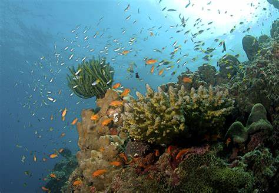
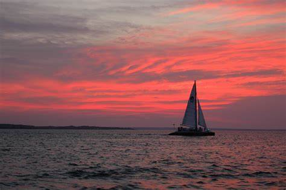
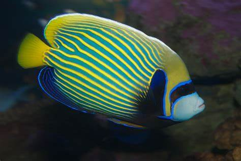

Sea life is the amazing diversity of living things in the oceans and other saltwater environments. Sea life produces oxygen, absorbs carbon dioxide, and supports the food web. Sea life also provides many benefits for humans, such as food, medicine, recreation, and inspiration. However, sea life faces many threats, such as pollution, overfishing, climate change, and habitat loss. We can help protect sea life by reducing our impact on the environment, supporting conservation efforts, and learning more about the wonders of the ocean. Other animals include:
Coral reefs are alive and full of amazing creatures. They are like underwater cities that provide food, protection, and tourism for millions of people. Coral reefs are very old and very valuable, but they need our help to survive. Pollution, climate change, and overfishing are some of the threats that coral reefs face. We can help save coral reefs by using less water, not touching them when we visit, and spreading the word about how awesome they are!
Sailing is a fun and exciting way to explore the water and enjoy the wind. Sailing involves controlling a boat that uses sails to catch the wind and move forward. Sailing can be done for recreation, sport, or travel. Sailing has a long history and has influenced many aspects of our culture, language, and trade. Sailing can also teach us valuable skills, such as navigation, teamwork, and problem-solving. Sailing is a great hobby for anyone who loves adventure and nature. Here are the top five small boat sellers:
Fishing is a popular activity that involves catching fish from different water sources, such as lakes, rivers, or oceans. Fishing can be done for food, sport, or fun. Fishing can also help people relax and connect with nature. Fishing requires some equipment, such as a rod, a line, a hook, and a bait. Some people also use nets, spears, or traps to catch fish. Fishing can be challenging and rewarding, as different fish have different behaviors and habitats. Fishing can also teach people about the diversity and importance of aquatic life.
All images on this page were found on wikimedia.org and were filed under the free to use and share commercially Creative Commons License.